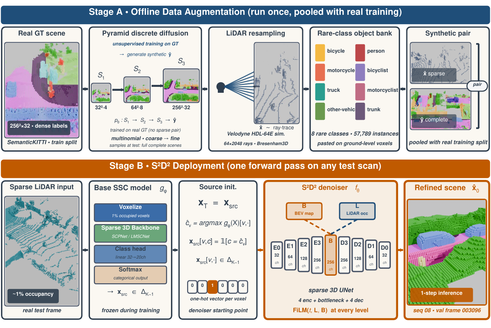

Main comparison
Click a column to sort. C = camera-only · L-SF = LiDAR single-frame.
| Method | Modality | mIoU | Note |
|---|
TPAMI 2026 · Under Review
A generative framework for LiDAR semantic scene completion built around S2D2, a structured-source discrete diffusion that refines any base predictor in a single forward pass. Paired with a three-stage pyramid data-augmentation pipeline and a BEV-perception secondary task. 38.54% mIoU on SemanticKITTI val.
We propose Structured Source Discrete Diffusion (S2D2), a framework that learns to refine the output of a base model toward the ground-truth distribution on the discrete probability simplex.
Semantic Scene Completion (SSC) predicts dense 3D geometry and semantics from sparse LiDAR observations. Existing methods treat SSC as a discriminative regression problem, and their predictions degrade sharply under extreme sparsity (~1% voxel occupancy) and class imbalance (over 7,000× between the most and least common classes on SemanticKITTI).
Standard diffusion generates from noise. S2D2 starts from the structured prediction of a supervised base model and applies correction-based sampling (Algorithm 2), which reduces to Euler integration of a learned velocity field on the product Riemannian manifold of categorical distributions. We pair this core with coarse-to-fine pyramid diffusion for synthetic data augmentation and source-consistent BEV conditioning.
On SemanticKITTI, S2D2 lifts SCPNet from 36.17% to 38.54% mIoU on SSC (+2.37%), and reaches 36.09% on LiDAR-only BEV perception, 9.06 points above the previous best dedicated 2D method. It does so while adding a single UNet forward pass on top of the base model — no distillation.
GSSC has three coupled parts: an offline data augmentation pipeline that generates labelled synthetic scenes, the S2D2 diffusion refiner that corrects any base predictor, and a BEV secondary task that demonstrates the refiner transfers beyond 3D completion. Below we zoom into the S2D2 core — its forward, reverse, training, and deployment behaviour.
On the per-voxel probability simplex ΔK−1, define
xt = ᾱt · x0 + (1 − ᾱt) · xsrc
where xsrc is any base SSC predictor’s output — not noise.
The reverse step is closed-form:
xt−1 = xt + (ᾱt−1 − ᾱt)(x̂0 − xsrc)
Errors do not amplify across steps. A single step at N=1 suffices.
Sample random t ∈ {1..T}, predict x̂0 = softmax(fθ(xt, t, c)).
Loss: LKL + 0.3·LLovász + 5×10−4·Laux, 100k steps, EMA deployed.
Freeze base model. Run S2D2 once. No multi-step rollout, no distillation. Plug into any SSC predictor that outputs categorical distributions.


Two rare-class frames from SemanticKITTI validation. Toggle between the sparse LiDAR input, the SCPNet base prediction, the S2D2 refinement, and the ground truth. The camera stays put between views so you can see exactly which voxels changed.
The multi-step diffusion schedule is a training device; deployment runs exactly one correction step. The race below is a real measurement on a contention-free H100 80GB.
All three runs use the same validation frame at 256×256×32 voxels. SCPNet latency is shared overhead; S2D2 is the additional work on top.
Click a column to sort. C = camera-only · L-SF = LiDAR single-frame.
| Method | Modality | mIoU | Note |
|---|
Sorted by gain Δ. Safety-critical classes marked with †.
| Class | SCPNet | S2D2 | Δ |
|---|
@article{anon2026gssc,
title = {Generative Semantic Scene Completion},
author = {Anonymous},
journal = {Under review at TPAMI},
year = {2026}
}